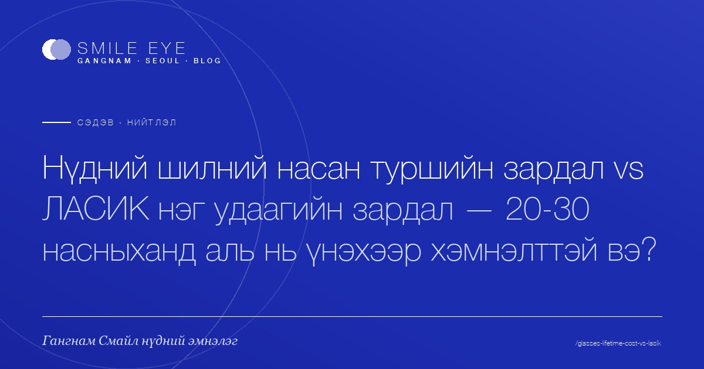

전체 글
10 편
안경 평생 비용 vs 라식 1회, 진짜 어느 쪽이 더 절약될까요?
20·30대가 가장 궁금해하는 질문. 안경·렌즈를 40년 쓰는 비용과 라식 1회 비용을 솔직하게 비교합니다. 몽골에서 한국 강남스마일까지 오는 총비용도 함께 정리했습니다.
READ MORE →
인천공항에서 강남까지, 한국 도착 첫날 통역·동선 가이드
라식·SMILE 상담을 위해 한국에 도착한 첫날, 인천공항에서 강남 안과까지 가는 동선과 통역, 식사·환전·유심까지 한 번에 정리했습니다.
READ MORE →
한국 시력교정 총비용 완전 정리 — 시술비·항공·호텔·통역까지
한국 라식 비용이 진짜 얼마인지 궁금하신가요? 시술비뿐 아니라 항공·호텔·통역·식비까지 모두 합한 실제 총비용을 몽골 환자 기준으로 정리해드립니다.
READ MORE →
몽골에서 한국 시력교정, 출국 전날부터 귀국 다음 날까지 진짜 일정
몽골에서 한국으로 라식·SMILE 받으러 갈 때 실제 며칠이 걸릴까요? 출국 전날 준비부터 귀국 다음 날 일상 복귀까지, 강남스마일안과의원 환자들의 실제 일정으로 정리했습니다.
READ MORE →
한국 셀럽 라식 트렌드: K-pop 스타들은 어떤 시력교정을 받을까?
K-pop 아이돌과 한국 셀럽들이 선택하는 시력교정 시술을 비교 분석합니다. 라식·SMILE·ICL의 차이, 회복 기간, 몽골 환자가 알아야 할 정보까지 정리했습니다.
READ MORE →
결혼식 전 라식, 신부 베스트 일정표 (한국 시력교정 가이드)
결혼식을 앞두고 라식을 고민 중이신가요? 신부 메이크업·웨딩 촬영·신혼여행까지 고려한 시력교정 베스트 일정과 회복 기간을 강남스마일안과가 정리했습니다.
READ MORE →
라식 무서워요, 수술대 오르기 직전 진짜 감정과 안심 포인트
라식이 무서운 건 당연합니다. 수술 직전 환자가 실제로 느낀 감정과 시력교정 부작용 걱정에 대한 안심 포인트를 솔직하게 정리했습니다.
READ MORE →
라식 후 컴퓨터·SNS 언제부터? 회복 일별 가능 활동 정리
라식 후 컴퓨터, SNS, 운동, 화장은 며칠 차부터 가능할까요? 수술 당일부터 1개월까지 일별 회복 일정과 일상 복귀 시점을 정리했습니다.
READ MORE →
안경 없는 첫날 — 한국 라식 받은 30대 몽골 직장인 후기
한국에서 라식을 받은 30대 몽골 직장인의 솔직한 후기. 비용, 회복 기간, 휴가 일정, 통역까지 — 라식 후기 한 편으로 정리한 강남스마일안과 가이드입니다.
READ MORE →
시력교정 가능할까? 출국 전 1분 자가 체크리스트
라식·SMILE·ICL을 고민 중이라면 출국 전 확인해야 할 자가 진단 항목을 정리했습니다. 나이·각막·생활습관까지 1분 체크리스트로 확인해보세요.
READ MORE →